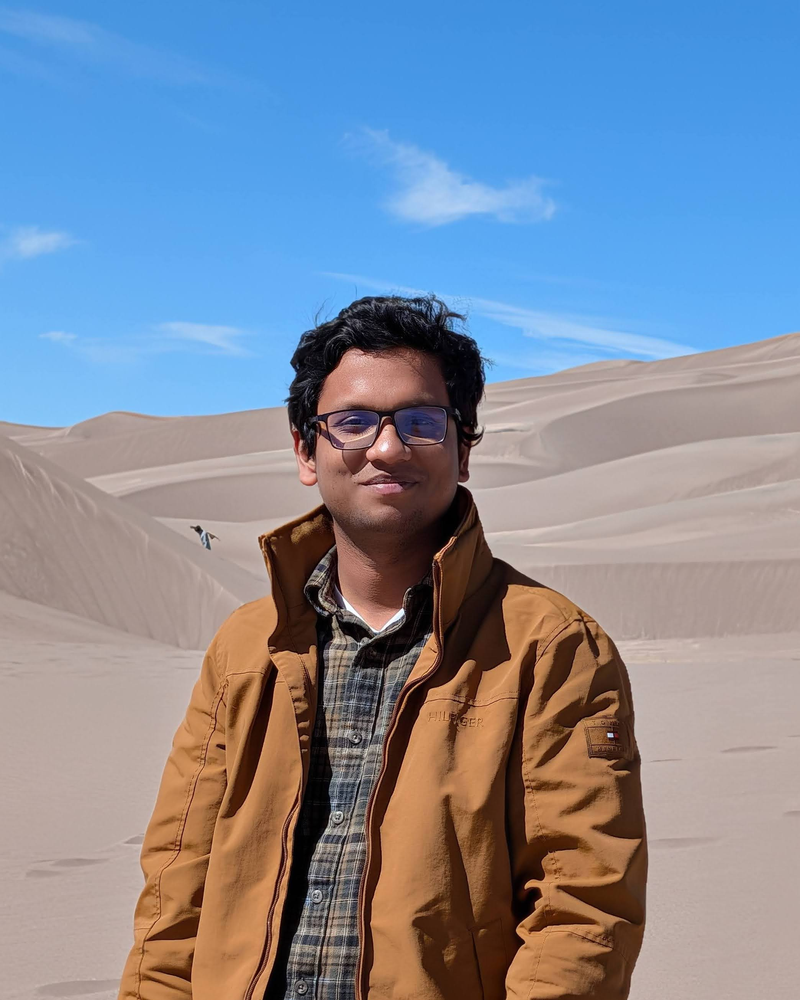

I'm a computer science PhD candidate (expected Spring 2027) researching data-free knowledge distillation for tabular machine learning, advised by Dr. Yu Lei. My first-author paper on TabKD was accepted at IJCAI 2026. Before my PhD, I was a Senior Software Engineer at Samsung R&D, building the Samsung Account platform used by hundreds of millions of devices worldwide.
Seeking research scientist roles and open to research collaborations. Feel free to reach out.
@inproceedings{ijcai2026p526,
title = {TabKD: Tabular Knowledge Distillation Through Interaction Diversity of Learned Feature Bins},
author = {Pereira, Shovon Niverd and Khadka, Krishna and Lei, Yu},
booktitle = {Proceedings of the Thirty-Fifth International Joint Conference on
Artificial Intelligence, {IJCAI-26}},
publisher = {International Joint Conferences on Artificial Intelligence Organization},
editor = {Diego Calvanese},
pages = {4723--4731},
year = {2026},
month = {8},
note = {Main Track},
doi = {10.24963/ijcai.2026/526},
url = {https://doi.org/10.24963/ijcai.2026/526},
}
Seeking research scientist roles and open to research collaborations. Feel free to reach out.